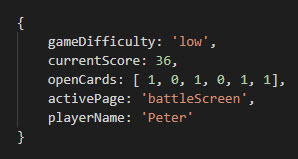

Redux
Hlukhatarenka Yuliya
Definition
REDUX is a container for managing state of application.
State is an regular JavaScript object
How does it work?

Core Concepts
- store
- actions and action creators
- reducer
Store
How to create Store:

What we can do with the Store:
- get current state
- subscribe listeners to change events
- update state by reducer
To get current state use:
store.getState()
To subscribe listeners use:
store.suscribe()

To update state by reducer use:
store.dispatch(action)

Action
Action is an object
{ type: ADD, payload: text }
Action creators
Reducers
Example